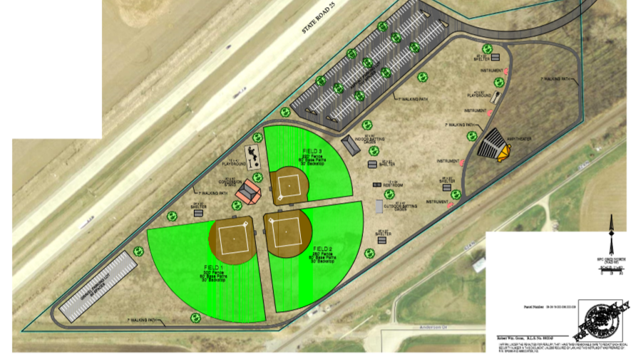
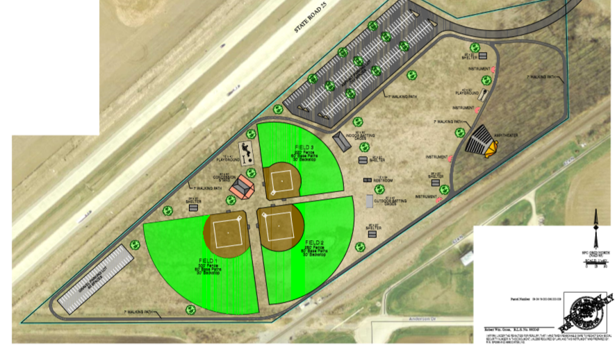
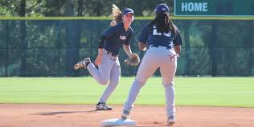
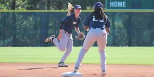

Liberty (Libby) was 14 years old and an 8th grader at Delphi Community Middle School. She was involved in several school and recreational sports including Softball, Soccer, Volleyball, and Swimming. She loved art, photography, and playing the saxophone in the school band. Her “free” time was spent going on adventures with her older sister, spending time doing family activities, and hanging with her many friends. She loved going to Florida on school breaks and trying new things. Libby and Abby were excited to start their adventure of high school together and she was going to compete against her sister on the swim team. February 13, 2017 – it all changed.
In honor of Abby and Libby’s love for the outdoors, adventure, sports, and the arts – a memorial park is being built. It includes a band shell, two playgrounds, three softball fields, and walking trail which will allow children and parents in future years to enjoy the many things the girls did.


 


 
